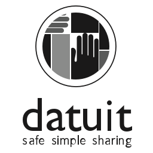

There are thousands of health apps out there.
Most of them require you to enter in your own information. Wouldn't it be nice if they connected directly to your information in your existing health records?
The apps here use Blue Button+ standards, meaning they accept information directly from your healthcare providers' records or another data source (assuming your healthcare provider is using the Blue Button+ standards on their end).
So when you find an app you like here, you can upload your own health information. You can also use these apps even if your doctor or other data source isn't sharing data via Blue Button yet.
-
Cake Health
Brings all your health care plans together online so you can easily track your health spending — without the paperwork.
-
CORAlink
An emergency app that stores emergency lifesaving information such as profile, blood type, allergies and medications.
-
CORAvault
Carry an always up-to-date health record, manage appointments, share records in a secure manner, and manage medications and allergies.
- 
Datuit
Accurately and conveniently communicate with all of your clinicians and caregivers at the same time.

FollowMyHealth
Empowers patients to take a more active role in managing their care.
-
Gazelle
Get your lab results on your smartphone with Gazelle. Life is complicated. Managing your health shouldn’t be.
Know an app that should be listed?
Tell us about it or suggest corrections.
Suggest an appThe apps and services above are just a fraction of the resources available today. The Department of Health and Human Services or the U.S. Government does not endorse any product, service or general policies of any non-Federal entity nor is responsible for the content of any individual organization's material or web pages found at these links.